第三组前后1秒：原流程＋头部参考0.1 · 十帧对照
本次新增运行8帧，复用已完成的2张中心帧。仍使用原13个候选身体点与原筛选规则，新增二维自动点为0；头部三维软保持权重统一为0.1。
优化代码与中心两帧完全一致，未按帧调参。新增neck/肩峰自动点关闭，旧8°／85%头部限制关闭。原有身体先验、角度上限、腕距、深度及原接缝流程保持一致。没有提前加入MANO或肩臂轮廓，没有引入后续统一目标或仅上肢关节优化。
新增八帧均未观察到同类大面积头部外扩：其中cam4 18.409s、18.917s原有外扩在身体和最终阶段均被抑制，其余六帧没有新增同类外扩。连同中心两帧，这十帧支持原流程只加头部参考0.1对防外扩有效；但新增八帧身体自动点RMSE 18.91→33.47px、手部10.64→11.04px，局部三维相交检查仍只有3/8帧通过。该结果不等于整体精度提升，也不是所有图像均不外扩的保证。
方法与报告 · 逐阶段数据 · CSV · 离线网页 · 结果包 · 重载验证
本次新增八帧
| 方案 | 最终身体RMSE / 89点 | 最终手部RMSE / 336点 | 局部交叉检查通过 |
|---|
| 原流程 | 18.91 px | 10.64 px | 3 / 8 |
| 原流程＋头部参考0.1 | 33.47 px | 11.04 px | 3 / 8 |
包含中心帧的全部十帧
| 方案 | 最终身体RMSE / 111点 | 最终手部RMSE / 420点 | 局部交叉检查通过 |
|---|
| 原流程 | 18.00 px | 10.39 px | 4 / 10 |
| 原流程＋头部参考0.1 | 34.44 px | 10.97 px | 4 / 10 |
RMSE参考同一批Sapiens2/WiLoR自动点，非人工真值；逐点平方误差汇总后开方。头部位移相对各帧刚体参考，非真实定位误差。头部入图顶点数不等于可见面积。局部交叉计数为三维非共面相交三角面配对数，不是二维线框交叉数或鼓包数；检查范围为调整的前臂/接缝区域对全表面，不保证全身无碰撞。
逐帧结果
| 帧 | 来源 | 身体RMSE 原→新 | 手部RMSE 原→新 | 新头部RMS mm | 局部交叉 左/右 原→新 |
|---|
| cam3 18.422s | 本次新增 | 19.14 → 28.27 | 10.49 → 10.76 | 15.22 | 41/0 → 35/0 |
| cam3 18.927s | 本次新增 | 16.51 → 44.56 | 9.36 → 11.52 | 23.72 | 26/0 → 24/0 |
| cam3 19.416s | 复用中心帧 | 9.04 → 48.52 | 9.39 → 11.32 | 23.94 | 16/19 → 4/0 |
| cam3 19.904s | 本次新增 | 18.96 → 31.19 | 11.22 → 11.33 | 30.98 | 0/0 → 0/0 |
| cam3 20.409s | 本次新增 | 27.74 → 54.70 | 12.31 → 12.17 | 25.88 | 0/0 → 0/0 |
| cam4 18.409s | 本次新增 | 10.99 → 27.11 | 8.62 → 8.94 | 17.77 | 45/0 → 30/0 |
| cam4 18.917s | 本次新增 | 9.20 → 13.57 | 8.87 → 10.56 | 12.85 | 0/0 → 0/0 |
| cam4 19.407s | 复用中心帧 | 16.62 → 26.53 | 9.28 → 9.97 | 15.52 | 0/0 → 0/0 |
| cam4 19.898s | 本次新增 | 18.12 → 21.70 | 11.97 → 11.13 | 29.17 | 88/0 → 80/0 |
| cam4 20.406s | 本次新增 | 18.94 → 20.71 | 11.55 → 11.64 | 26.05 | 89/0 → 87/0 |
cam3 全部五帧汇总图
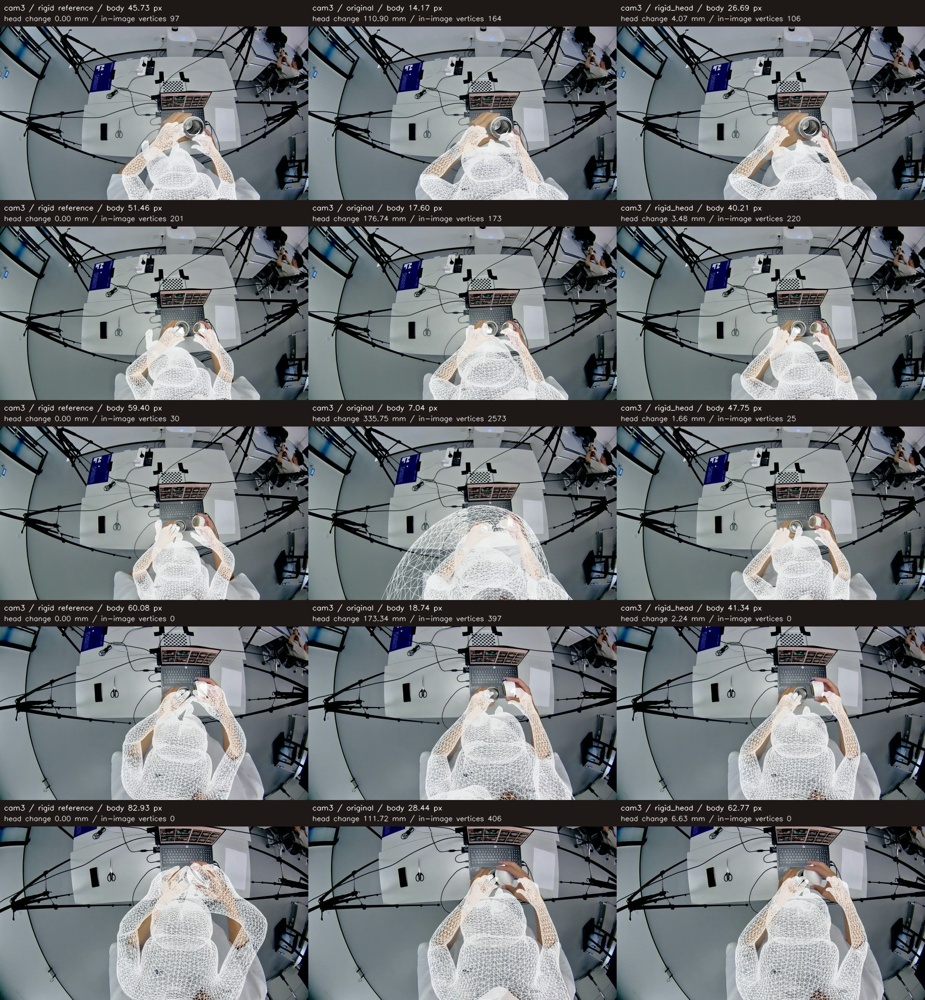
身体阶段：刚体参考 / 原流程 / 本次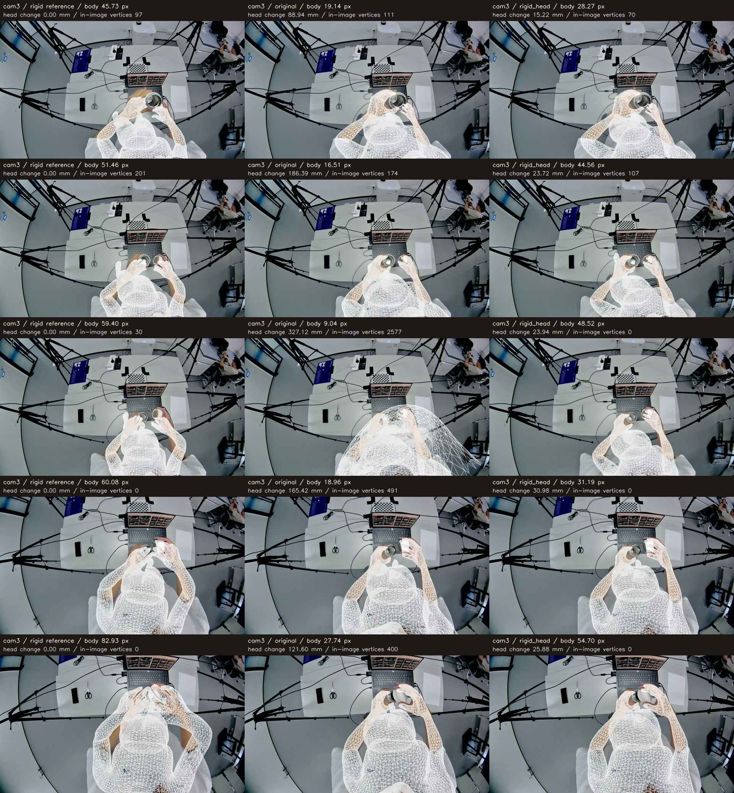
最终阶段：刚体参考 / 原流程融合 / 本次融合cam4 全部五帧汇总图
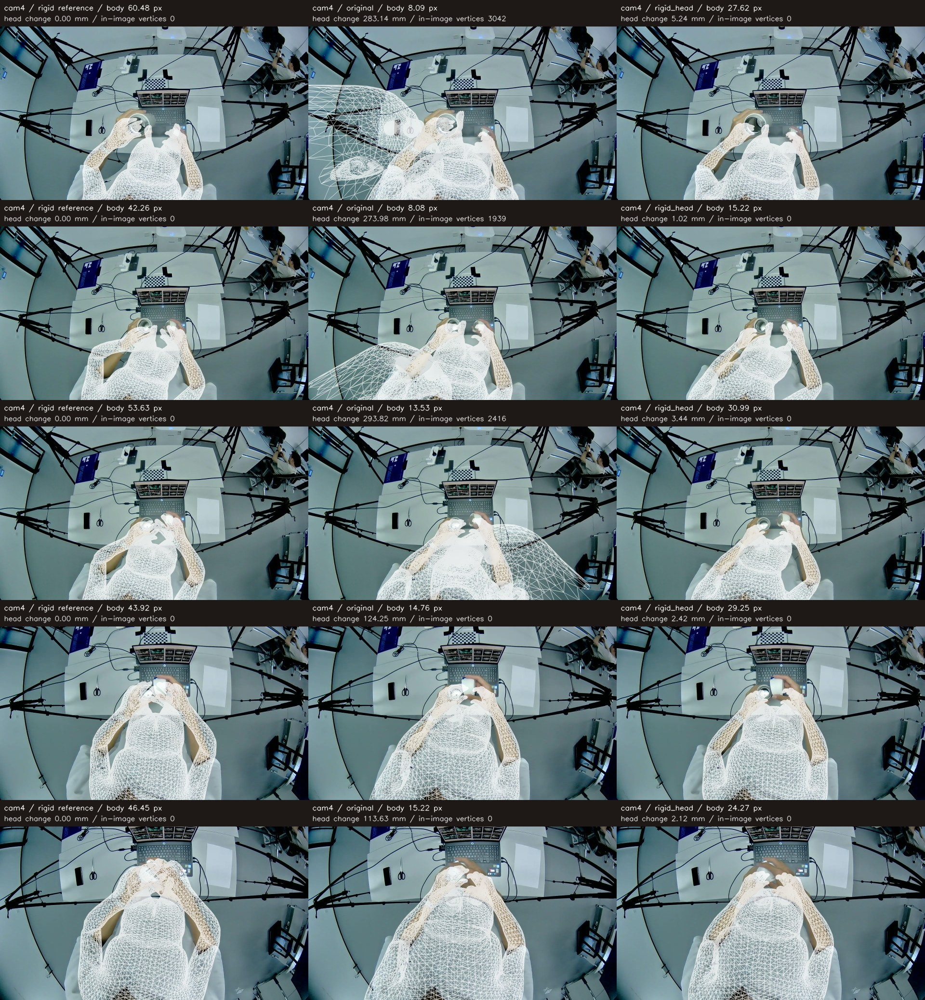
身体阶段：刚体参考 / 原流程 / 本次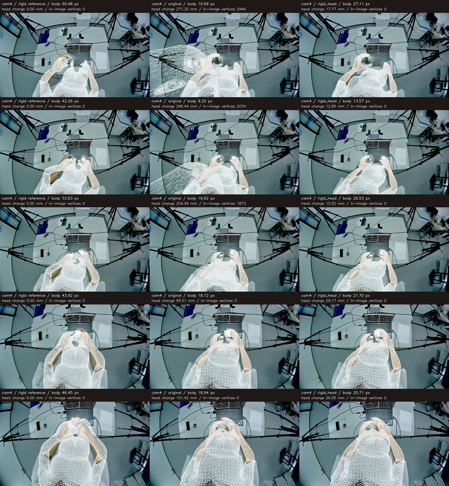
最终阶段：刚体参考 / 原流程融合 / 本次融合cam3 · 18.422 s · 本次新增
身体阶段和最终融合均未见同类大幅头部外扩；手部主体投影与原流程接近，肩臂位置仍有变化，左腕局部几何未通过。 最终身体RMSE 19.14→28.27 px，手部RMSE 10.49→10.76 px；头部相对刚体RMS 15.22 mm；局部三维相交面配对左/右 41/0→35/0。
EgoSMPLX 原始预测
 原流程：身体 202.95 px；头部相对刚体RMS 256.14 mm；入图顶点 0
原流程：身体 202.95 px；头部相对刚体RMS 256.14 mm；入图顶点 0 原流程＋头部参考0.1：身体 202.95 px；头部相对刚体RMS 256.14 mm；入图顶点 0
原流程＋头部参考0.1：身体 202.95 px；头部相对刚体RMS 256.14 mm；入图顶点 0刚体校正
 原流程：身体 45.73 px；头部相对刚体RMS 0.00 mm；入图顶点 97
原流程：身体 45.73 px；头部相对刚体RMS 0.00 mm；入图顶点 97 原流程＋头部参考0.1：身体 45.73 px；头部相对刚体RMS 0.00 mm；入图顶点 97
原流程＋头部参考0.1：身体 45.73 px；头部相对刚体RMS 0.00 mm；入图顶点 97Sapiens2 身体姿态优化
 原流程：身体 14.17 px；头部相对刚体RMS 110.90 mm；入图顶点 164
原流程：身体 14.17 px；头部相对刚体RMS 110.90 mm；入图顶点 164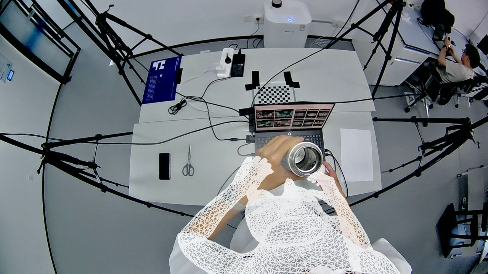
原流程＋头部参考0.1：身体 26.69 px；头部相对刚体RMS 4.07 mm；入图顶点 106腕部优化
轮廓优化
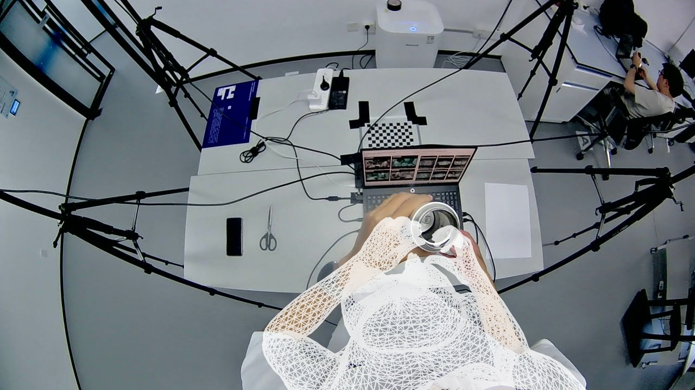
原流程：身体 18.88 px；头部相对刚体RMS 108.25 mm；入图顶点 158原流程＋头部参考0.1：身体 31.67 px；头部相对刚体RMS 6.60 mm；入图顶点 103MANO 辅助身体
 原流程：身体 19.14 px；头部相对刚体RMS 88.94 mm；入图顶点 111
原流程：身体 19.14 px；头部相对刚体RMS 88.94 mm；入图顶点 111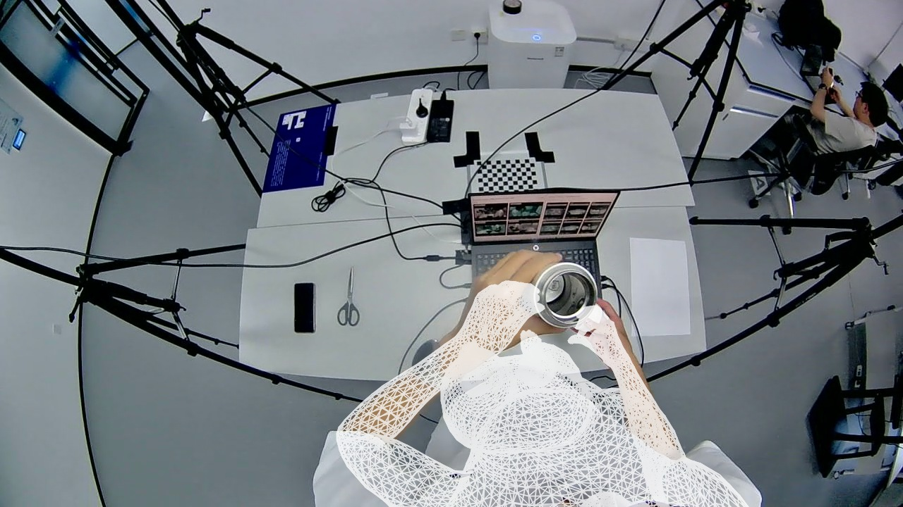
原流程＋头部参考0.1：身体 28.27 px；头部相对刚体RMS 15.22 mm；入图顶点 70原接缝融合结果
 原流程：身体 19.14 px；头部相对刚体RMS 88.94 mm；入图顶点 111
原流程：身体 19.14 px；头部相对刚体RMS 88.94 mm；入图顶点 111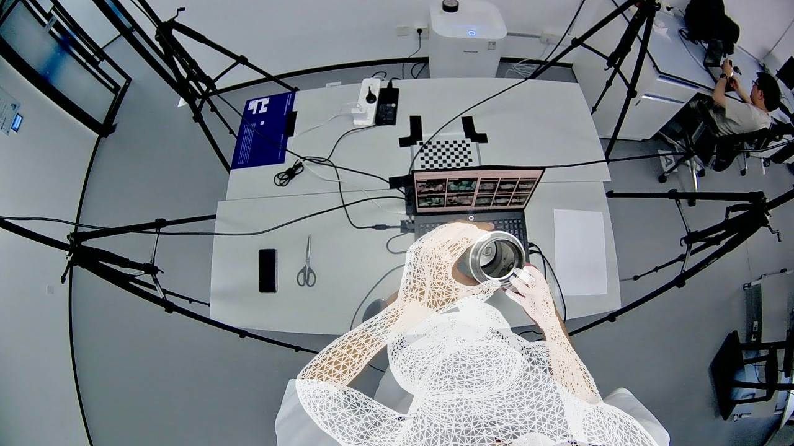
原流程＋头部参考0.1：身体 28.27 px；头部相对刚体RMS 15.22 mm；入图顶点 70同一区域左右手放大
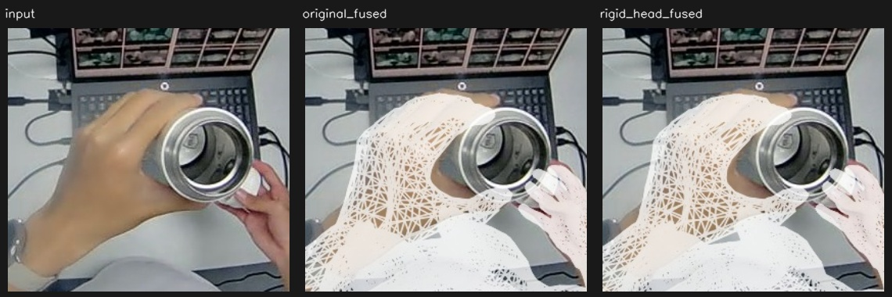
left：原图 / 原流程 / 本次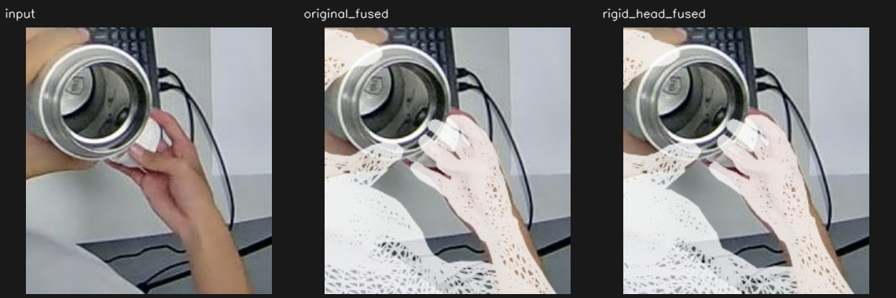
right：原图 / 原流程 / 本次cam3 · 18.927 s · 本次新增
身体及最终投影未见同类大幅头部外扩，肩带/躯干位置有变化。左手旁突出的白色网格经部位核对来自左脚；原透明线框没有做真实场景遮挡剔除，并非新增手部结构。这项核查不证明脚部三维位置准确。左腕局部几何仍未通过。 最终身体RMSE 16.51→44.56 px，手部RMSE 9.36→11.52 px；头部相对刚体RMS 23.72 mm；局部三维相交面配对左/右 26/0→24/0。
EgoSMPLX 原始预测
 原流程：身体 216.21 px；头部相对刚体RMS 301.11 mm；入图顶点 0
原流程：身体 216.21 px；头部相对刚体RMS 301.11 mm；入图顶点 0 原流程＋头部参考0.1：身体 216.21 px；头部相对刚体RMS 301.11 mm；入图顶点 0
原流程＋头部参考0.1：身体 216.21 px；头部相对刚体RMS 301.11 mm；入图顶点 0刚体校正
 原流程：身体 51.46 px；头部相对刚体RMS 0.00 mm；入图顶点 201
原流程：身体 51.46 px；头部相对刚体RMS 0.00 mm；入图顶点 201 原流程＋头部参考0.1：身体 51.46 px；头部相对刚体RMS 0.00 mm；入图顶点 201
原流程＋头部参考0.1：身体 51.46 px；头部相对刚体RMS 0.00 mm；入图顶点 201Sapiens2 身体姿态优化
 原流程：身体 17.60 px；头部相对刚体RMS 176.74 mm；入图顶点 173
原流程：身体 17.60 px；头部相对刚体RMS 176.74 mm；入图顶点 173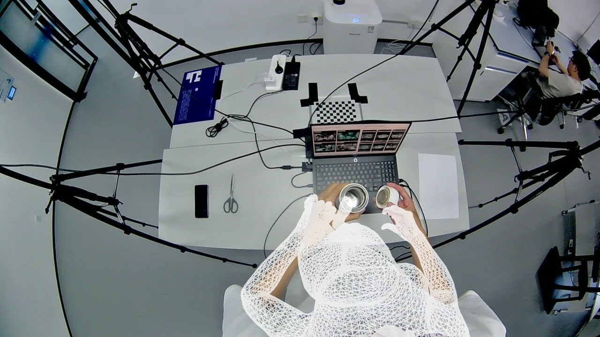
原流程＋头部参考0.1：身体 40.21 px；头部相对刚体RMS 3.48 mm；入图顶点 220腕部优化
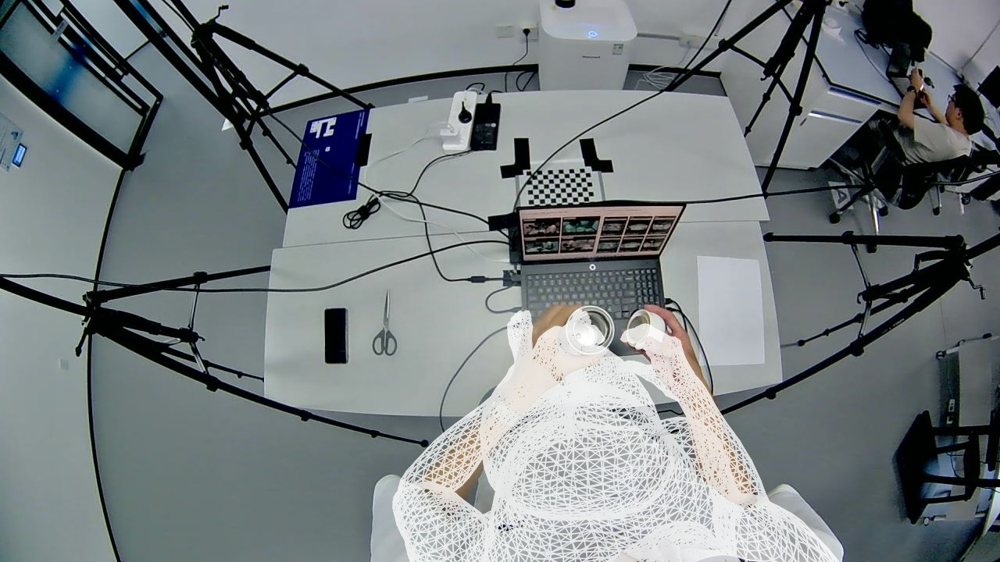
原流程：身体 19.58 px；头部相对刚体RMS 180.77 mm；入图顶点 182原流程＋头部参考0.1：身体 45.20 px；头部相对刚体RMS 4.86 mm；入图顶点 194轮廓优化
 原流程：身体 20.45 px；头部相对刚体RMS 180.35 mm；入图顶点 189原流程＋头部参考0.1：身体 45.13 px；头部相对刚体RMS 5.32 mm；入图顶点 184
原流程：身体 20.45 px；头部相对刚体RMS 180.35 mm；入图顶点 189原流程＋头部参考0.1：身体 45.13 px；头部相对刚体RMS 5.32 mm；入图顶点 184MANO 辅助身体
 原流程：身体 16.51 px；头部相对刚体RMS 186.39 mm；入图顶点 174原流程＋头部参考0.1：身体 44.56 px；头部相对刚体RMS 23.72 mm；入图顶点 107
原流程：身体 16.51 px；头部相对刚体RMS 186.39 mm；入图顶点 174原流程＋头部参考0.1：身体 44.56 px；头部相对刚体RMS 23.72 mm；入图顶点 107原接缝融合结果
 原流程：身体 16.51 px；头部相对刚体RMS 186.39 mm；入图顶点 174
原流程：身体 16.51 px；头部相对刚体RMS 186.39 mm；入图顶点 174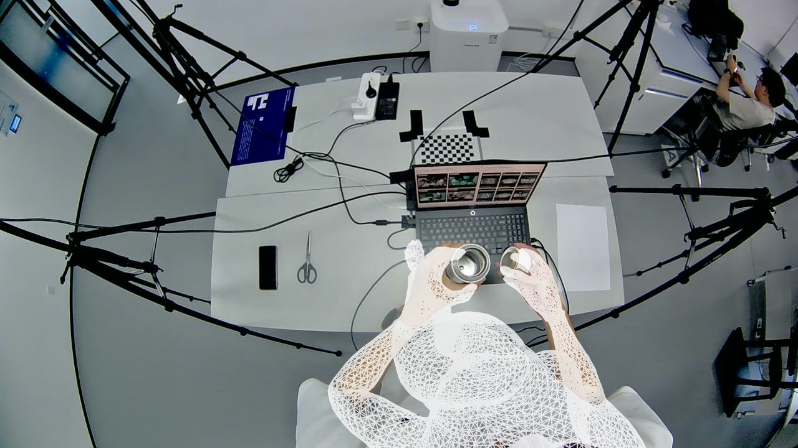
原流程＋头部参考0.1：身体 44.56 px；头部相对刚体RMS 23.72 mm；入图顶点 107同一区域左右手放大
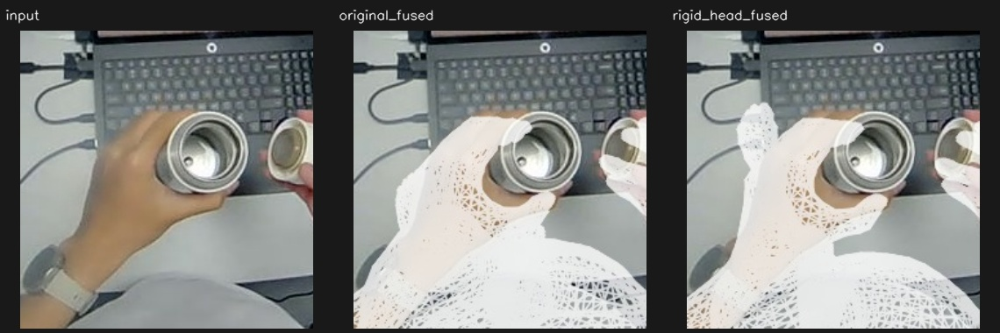
left：原图 / 原流程 / 本次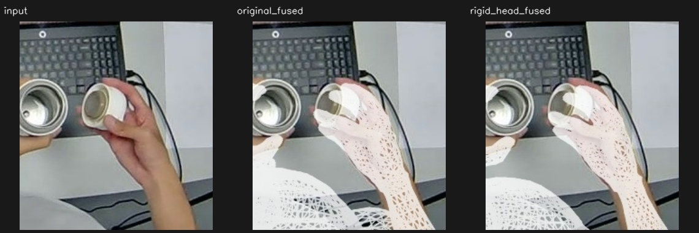
right：原图 / 原流程 / 本次左手旁额外白色网格的部位核查
按SMPL-X蒙皮部位核对，该突出投影来自左脚，不是新增手部或头部。旧、新左脚投影纵向范围分别约436–466 px、385–415 px；现有透明线框没有进行真实场景遮挡剔除。这项核查只定位网格来源，不证明脚部三维位置准确。本次保留原渲染方式。
cam3 · 19.904 s · 本次新增
身体和最终阶段均未出现同类大幅头部外扩，左右手整体接近原结果，但手指与真实物体的贴合仍非完全准确，双腕局部相交检查通过。 最终身体RMSE 18.96→31.19 px，手部RMSE 11.22→11.33 px；头部相对刚体RMS 30.98 mm；局部三维相交面配对左/右 0/0→0/0。
EgoSMPLX 原始预测
 原流程：身体 224.77 px；头部相对刚体RMS 199.59 mm；入图顶点 0
原流程：身体 224.77 px；头部相对刚体RMS 199.59 mm；入图顶点 0 原流程＋头部参考0.1：身体 224.77 px；头部相对刚体RMS 199.59 mm；入图顶点 0
原流程＋头部参考0.1：身体 224.77 px；头部相对刚体RMS 199.59 mm；入图顶点 0刚体校正
 原流程：身体 60.08 px；头部相对刚体RMS 0.00 mm；入图顶点 0
原流程：身体 60.08 px；头部相对刚体RMS 0.00 mm；入图顶点 0 原流程＋头部参考0.1：身体 60.08 px；头部相对刚体RMS 0.00 mm；入图顶点 0
原流程＋头部参考0.1：身体 60.08 px；头部相对刚体RMS 0.00 mm；入图顶点 0Sapiens2 身体姿态优化
 原流程：身体 18.74 px；头部相对刚体RMS 173.34 mm；入图顶点 397
原流程：身体 18.74 px；头部相对刚体RMS 173.34 mm；入图顶点 397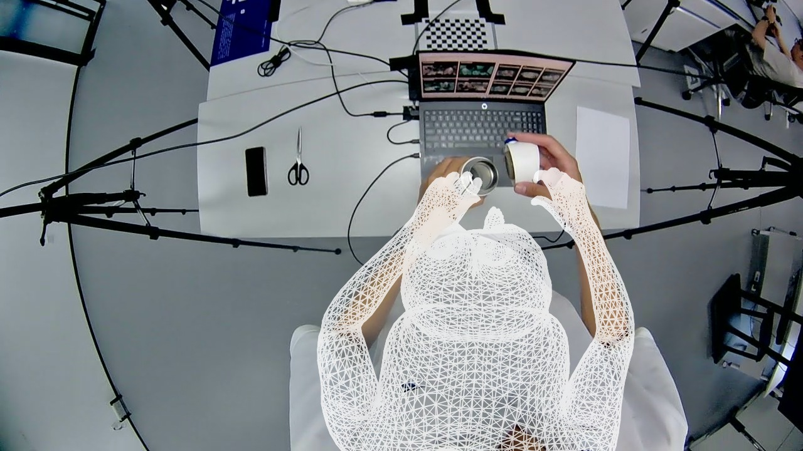
原流程＋头部参考0.1：身体 41.34 px；头部相对刚体RMS 2.24 mm；入图顶点 0腕部优化
 原流程：身体 19.51 px；头部相对刚体RMS 177.30 mm；入图顶点 507
原流程：身体 19.51 px；头部相对刚体RMS 177.30 mm；入图顶点 507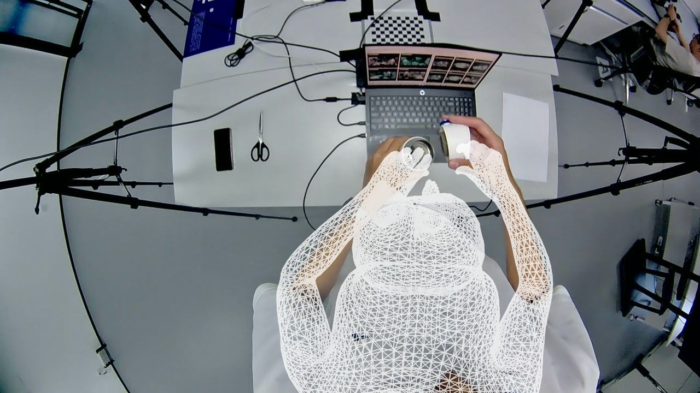
原流程＋头部参考0.1：身体 42.54 px；头部相对刚体RMS 3.11 mm；入图顶点 0轮廓优化
 原流程：身体 19.98 px；头部相对刚体RMS 176.67 mm；入图顶点 670
原流程：身体 19.98 px；头部相对刚体RMS 176.67 mm；入图顶点 670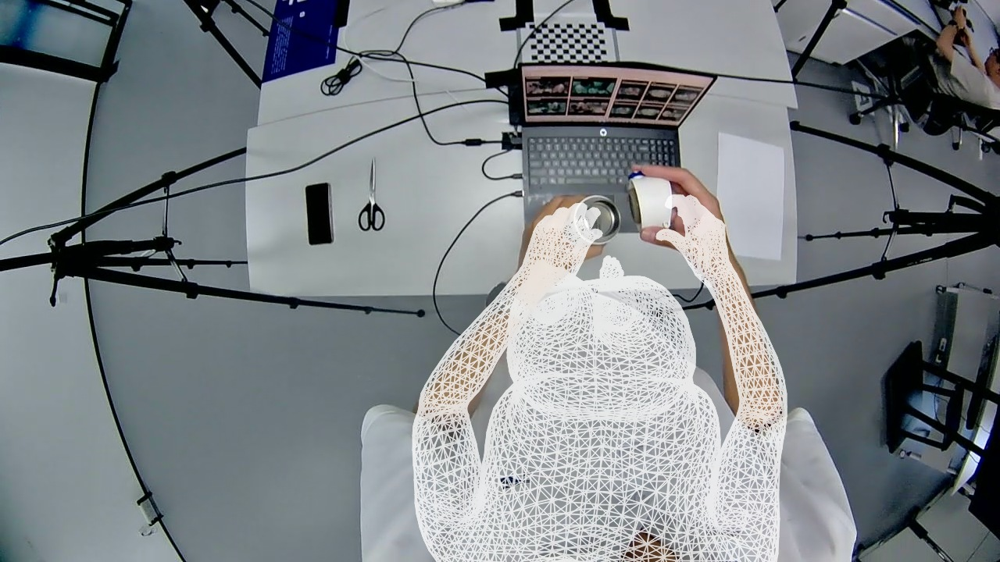
原流程＋头部参考0.1：身体 41.33 px；头部相对刚体RMS 3.70 mm；入图顶点 0MANO 辅助身体
 原流程：身体 18.96 px；头部相对刚体RMS 165.42 mm；入图顶点 491
原流程：身体 18.96 px；头部相对刚体RMS 165.42 mm；入图顶点 491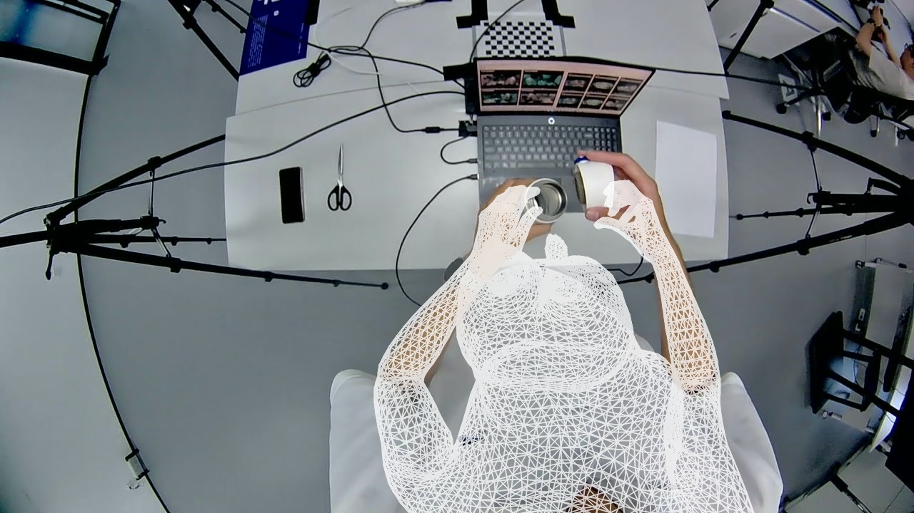
原流程＋头部参考0.1：身体 31.19 px；头部相对刚体RMS 30.98 mm；入图顶点 0原接缝融合结果
 原流程：身体 18.96 px；头部相对刚体RMS 165.42 mm；入图顶点 491
原流程：身体 18.96 px；头部相对刚体RMS 165.42 mm；入图顶点 491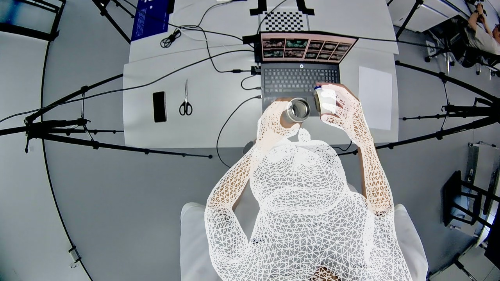
原流程＋头部参考0.1：身体 31.19 px；头部相对刚体RMS 30.98 mm；入图顶点 0同一区域左右手放大
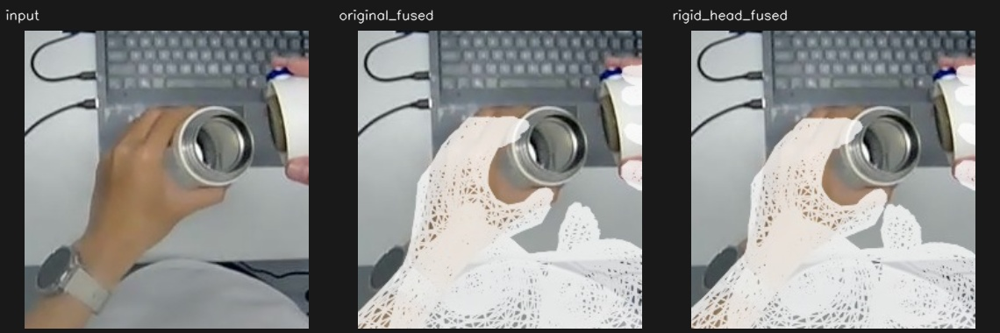
left：原图 / 原流程 / 本次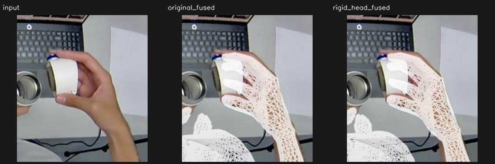
right：原图 / 原流程 / 本次cam3 · 20.409 s · 本次新增
身体和最终阶段未见同类大幅头部外扩；肩带和躯干拟合发生变化，自动身体点误差明显增加。手部主体仍接近原结果，双腕局部相交检查通过。 最终身体RMSE 27.74→54.70 px，手部RMSE 12.31→12.17 px；头部相对刚体RMS 25.88 mm；局部三维相交面配对左/右 0/0→0/0。
EgoSMPLX 原始预测
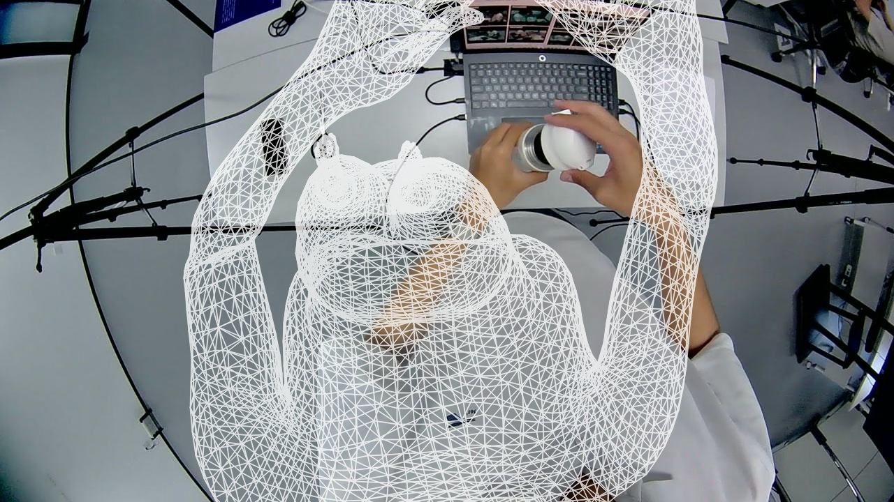
原流程：身体 256.40 px；头部相对刚体RMS 149.25 mm；入图顶点 0 原流程＋头部参考0.1：身体 256.40 px；头部相对刚体RMS 149.25 mm；入图顶点 0
原流程＋头部参考0.1：身体 256.40 px；头部相对刚体RMS 149.25 mm；入图顶点 0刚体校正
 原流程：身体 82.93 px；头部相对刚体RMS 0.00 mm；入图顶点 0
原流程：身体 82.93 px；头部相对刚体RMS 0.00 mm；入图顶点 0 原流程＋头部参考0.1：身体 82.93 px；头部相对刚体RMS 0.00 mm；入图顶点 0
原流程＋头部参考0.1：身体 82.93 px；头部相对刚体RMS 0.00 mm；入图顶点 0Sapiens2 身体姿态优化
 原流程：身体 28.44 px；头部相对刚体RMS 111.72 mm；入图顶点 406
原流程：身体 28.44 px；头部相对刚体RMS 111.72 mm；入图顶点 406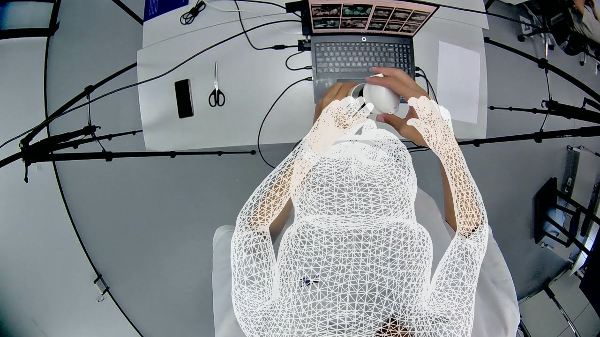
原流程＋头部参考0.1：身体 62.77 px；头部相对刚体RMS 6.63 mm；入图顶点 0腕部优化
 原流程：身体 30.64 px；头部相对刚体RMS 108.27 mm；入图顶点 273
原流程：身体 30.64 px；头部相对刚体RMS 108.27 mm；入图顶点 273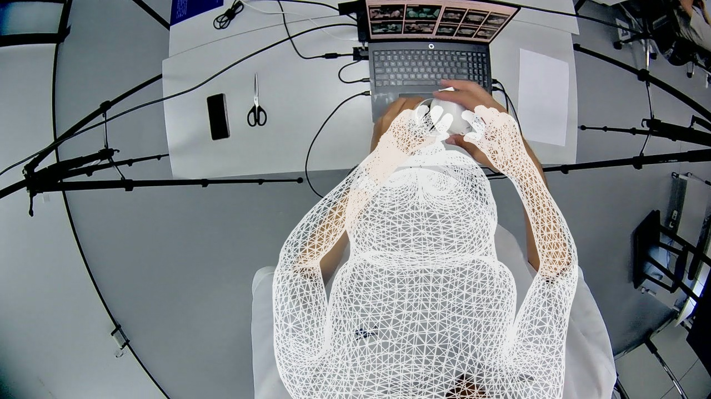
原流程＋头部参考0.1：身体 67.32 px；头部相对刚体RMS 3.27 mm；入图顶点 0轮廓优化
 原流程：身体 30.25 px；头部相对刚体RMS 109.24 mm；入图顶点 313原流程＋头部参考0.1：身体 66.40 px；头部相对刚体RMS 3.23 mm；入图顶点 0
原流程：身体 30.25 px；头部相对刚体RMS 109.24 mm；入图顶点 313原流程＋头部参考0.1：身体 66.40 px；头部相对刚体RMS 3.23 mm；入图顶点 0MANO 辅助身体
原接缝融合结果
 原流程：身体 27.74 px；头部相对刚体RMS 121.60 mm；入图顶点 400
原流程：身体 27.74 px；头部相对刚体RMS 121.60 mm；入图顶点 400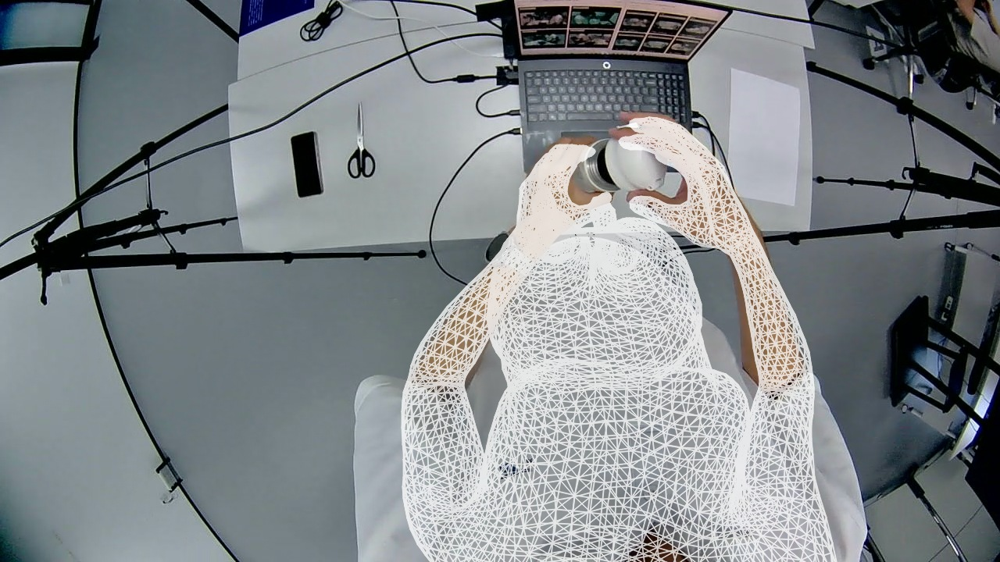
原流程＋头部参考0.1：身体 54.70 px；头部相对刚体RMS 25.88 mm；入图顶点 0同一区域左右手放大
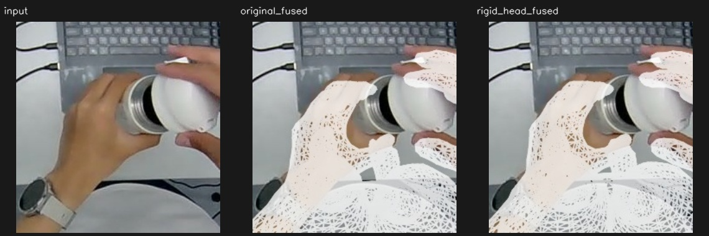
left：原图 / 原流程 / 本次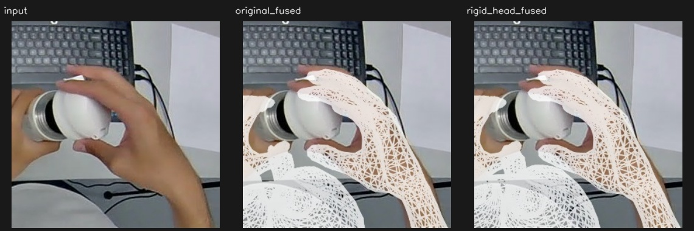
right：原图 / 原流程 / 本次cam4 · 18.409 s · 本次新增
原流程向画面左侧大面积伸出的头部网格，在身体阶段和最终融合中均被抑制。手部原有轮廓偏差仍在，左腕局部三维相交未通过，不能认定整体几何已正确。 最终身体RMSE 10.99→27.11 px，手部RMSE 8.62→8.94 px；头部相对刚体RMS 17.77 mm；局部三维相交面配对左/右 45/0→30/0。
EgoSMPLX 原始预测
 原流程：身体 150.19 px；头部相对刚体RMS 238.88 mm；入图顶点 0
原流程：身体 150.19 px；头部相对刚体RMS 238.88 mm；入图顶点 0 原流程＋头部参考0.1：身体 150.19 px；头部相对刚体RMS 238.88 mm；入图顶点 0
原流程＋头部参考0.1：身体 150.19 px；头部相对刚体RMS 238.88 mm；入图顶点 0刚体校正
 原流程：身体 60.48 px；头部相对刚体RMS 0.00 mm；入图顶点 0
原流程：身体 60.48 px；头部相对刚体RMS 0.00 mm；入图顶点 0 原流程＋头部参考0.1：身体 60.48 px；头部相对刚体RMS 0.00 mm；入图顶点 0
原流程＋头部参考0.1：身体 60.48 px；头部相对刚体RMS 0.00 mm；入图顶点 0Sapiens2 身体姿态优化
 原流程：身体 8.09 px；头部相对刚体RMS 283.14 mm；入图顶点 3042
原流程：身体 8.09 px；头部相对刚体RMS 283.14 mm；入图顶点 3042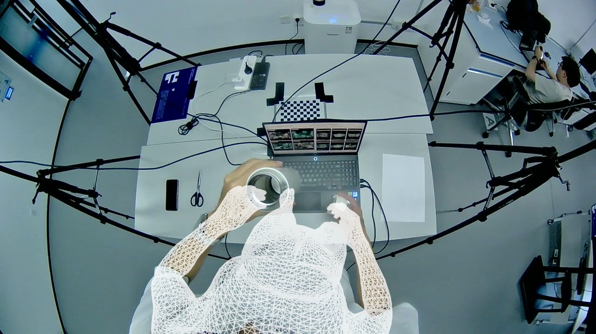
原流程＋头部参考0.1：身体 27.62 px；头部相对刚体RMS 5.24 mm；入图顶点 0腕部优化
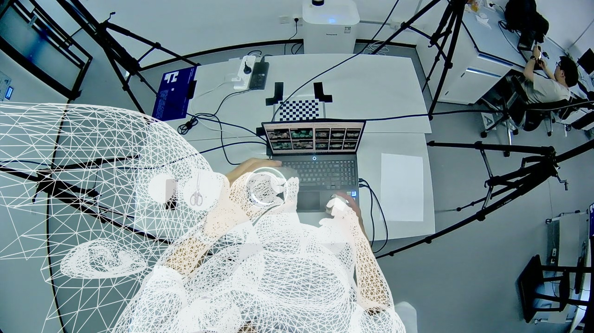
原流程：身体 9.43 px；头部相对刚体RMS 287.50 mm；入图顶点 3003原流程＋头部参考0.1：身体 28.65 px；头部相对刚体RMS 4.03 mm；入图顶点 0轮廓优化
 原流程：身体 10.56 px；头部相对刚体RMS 284.49 mm；入图顶点 3086
原流程：身体 10.56 px；头部相对刚体RMS 284.49 mm；入图顶点 3086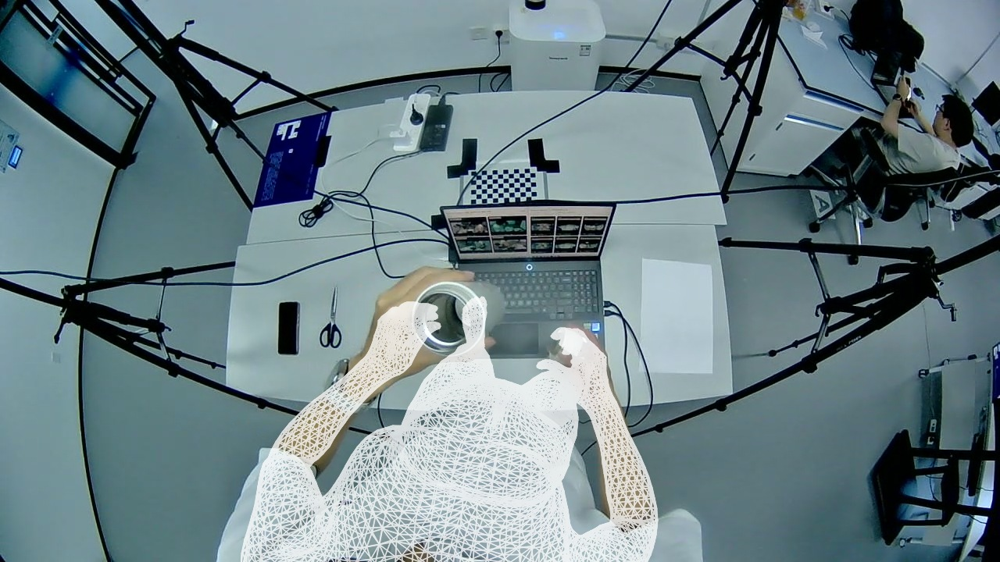
原流程＋头部参考0.1：身体 30.25 px；头部相对刚体RMS 4.21 mm；入图顶点 0MANO 辅助身体
原接缝融合结果
 原流程：身体 10.99 px；头部相对刚体RMS 271.32 mm；入图顶点 2946
原流程：身体 10.99 px；头部相对刚体RMS 271.32 mm；入图顶点 2946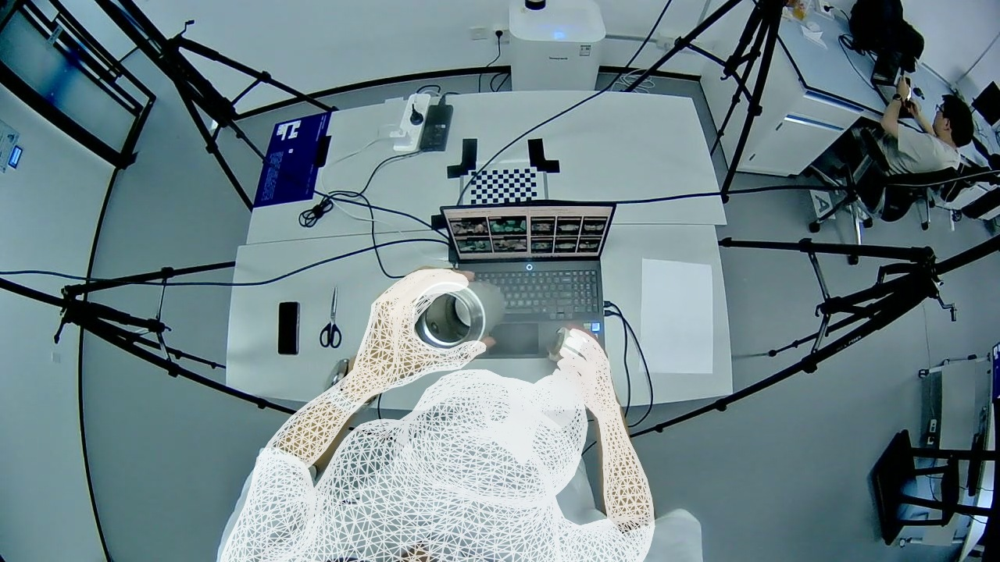
原流程＋头部参考0.1：身体 27.11 px；头部相对刚体RMS 17.77 mm；入图顶点 0同一区域左右手放大
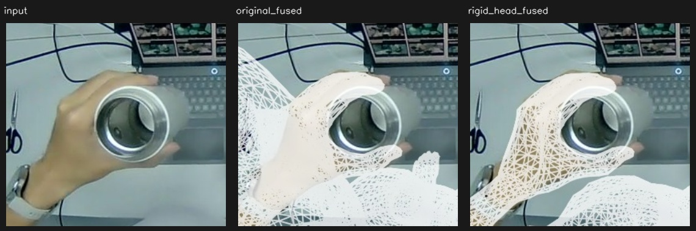
left：原图 / 原流程 / 本次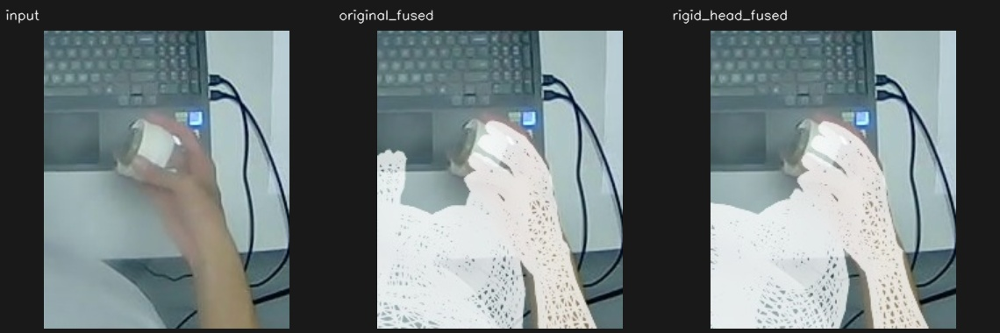
right：原图 / 原流程 / 本次回退checkpoint：d17f432c30f5a801e467c64bb911466f311d0750；拟合代码：17be1940457921fa4a2bdbd125922ece71473205。本次未修改优化代码，未替换默认流程。